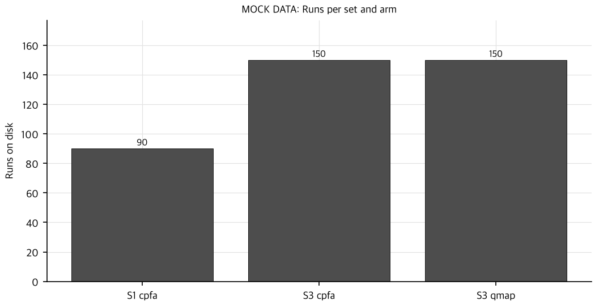

Good: every set and arm has the run count that schema.SET_CELLS fixes.
| field | value |
|---|---|
| What | Write fake runs in the real run layout. |
| Why | M1 exit 1: the flow needs input before any real pipeline exists (MVP ladder). |
| Input data | No input data. The generator invents every value (generated, not simulated). |
| Output data | 390 run folders under mock/runs, 6 files each. |
| Result | 390 runs, 390 with mock = 1. |
| Result note | Good: every set and arm has the run count that schema.SET_CELLS fixes. |
| Status | ran |

| set | arm | runs | expected |
|---|---|---|---|
| S1 | cpfa | 90 | 90 |
| S3 | cpfa | 150 | 150 |
| S3 | qmap | 150 | 150 |